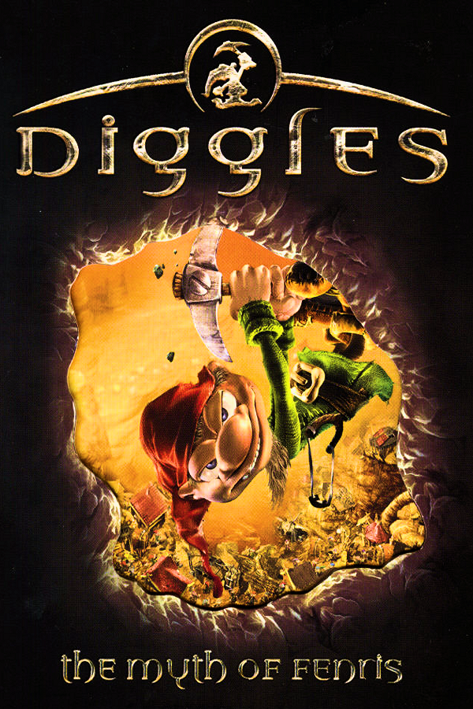

Diggles: The Myth of Fenris
Diggles: The Myth of Fenris
Detalhes
|  | |
| Tempo de jogo | Não Jogado |
| Última Atividade | Nunca |
| Adicionado | 09/03/2025 22:47:31 |
| Modificado | 10/03/2025 0:22:56 |
| Status de Conclusão | Not Played |
| Biblioteca | Gog |
| Fonte | GOG |
| Plataforma | PC (Windows) |
| Data de Lançamento | 27/09/2001 |
| Pontuação da Comunidade | |
| Avaliação da crítica | 62 |
| Pontuação do Usuário | |
| Gênero | Real-time strategy |
| Desenvolvedor | SEK GmbH |
| Editor | Innonics Strategy First |
| Funções | Single Player |
| Links | Wikipedia |
| Tag | [EMT] Video Micro missing |
Descrição
Diggles: The Myth of Fenris (also known as just Diggles in the North American version, and Wiggles in the European version) is a game released by Innonics in Europe on September 27, 2001, and by Strategy First in North America on March 19, 2002. The game is both a side-scrolling strategy and a colony management sim game which is based on a 3D-engine. You are guiding your dwarves, called "diggles" in the English version, "Wiggles" in the German version and "Gnomy" in the Russian version. The dwarves can manufacture tools, weapons, rooms and other advanced manufacturing shops (as part of a moderately large technology tree). You can set up your workshops and rooms in the caves that your dwarves have been digging. Your mission is to dig down and solve quests which contribute to your global quest, which is to chain Fenris, the fiery dog of Odin. You encounter other clans and creatures on the way, some hostile, some not.